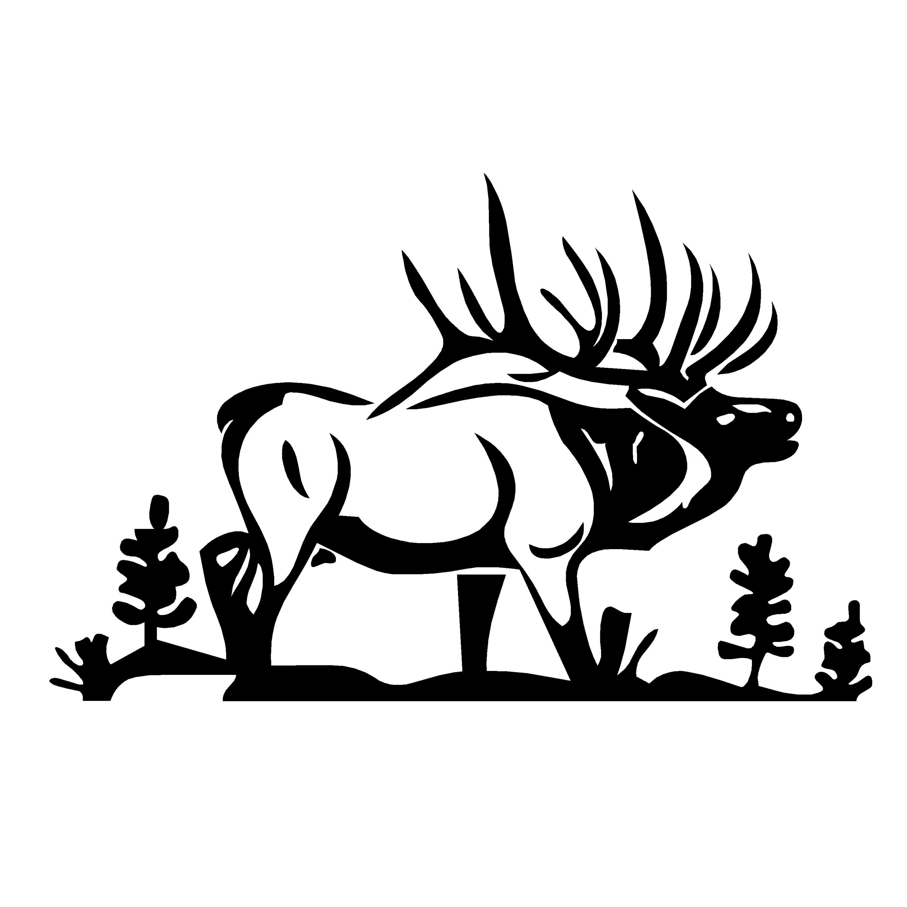
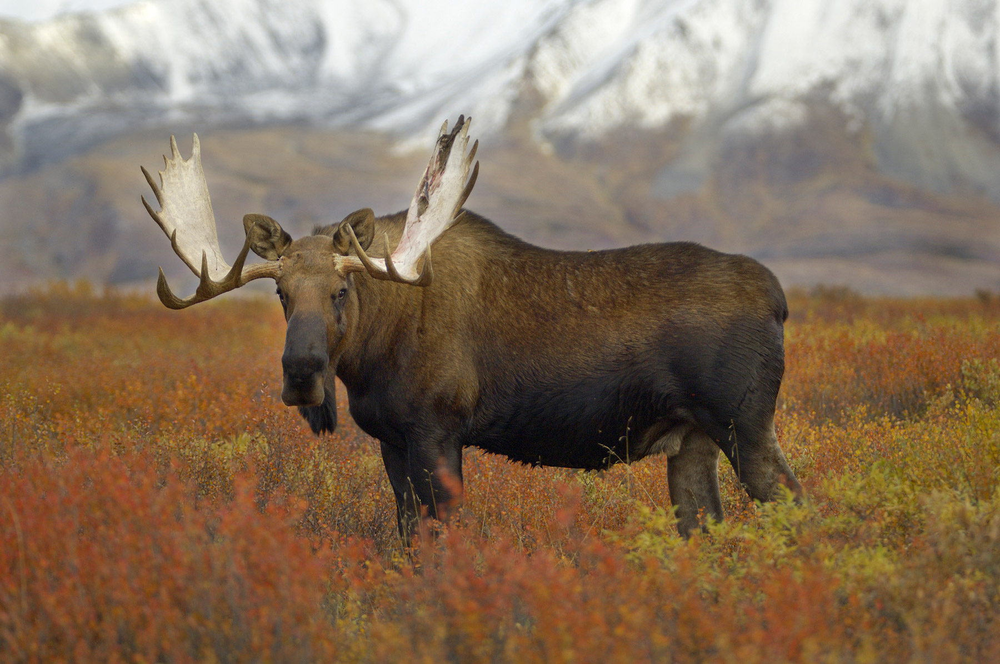
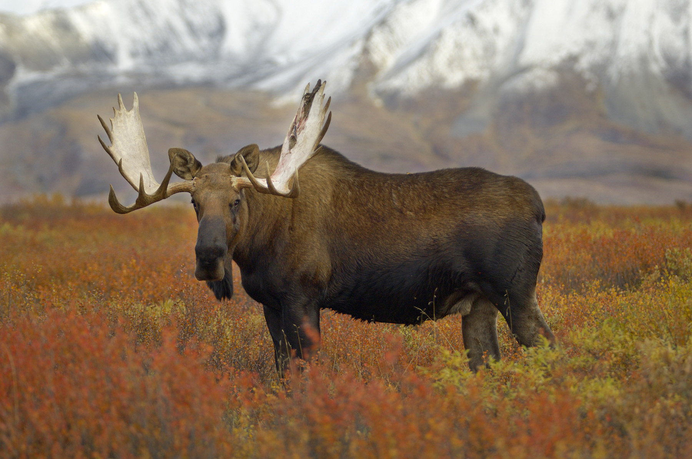
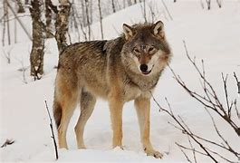
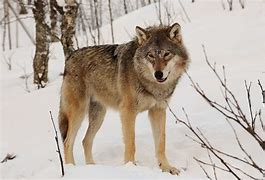
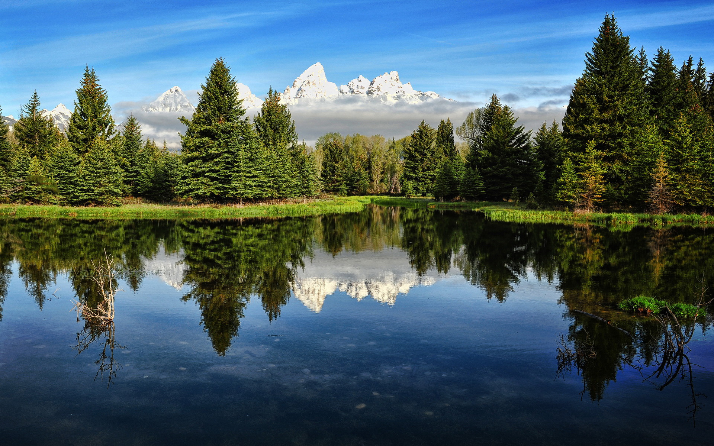
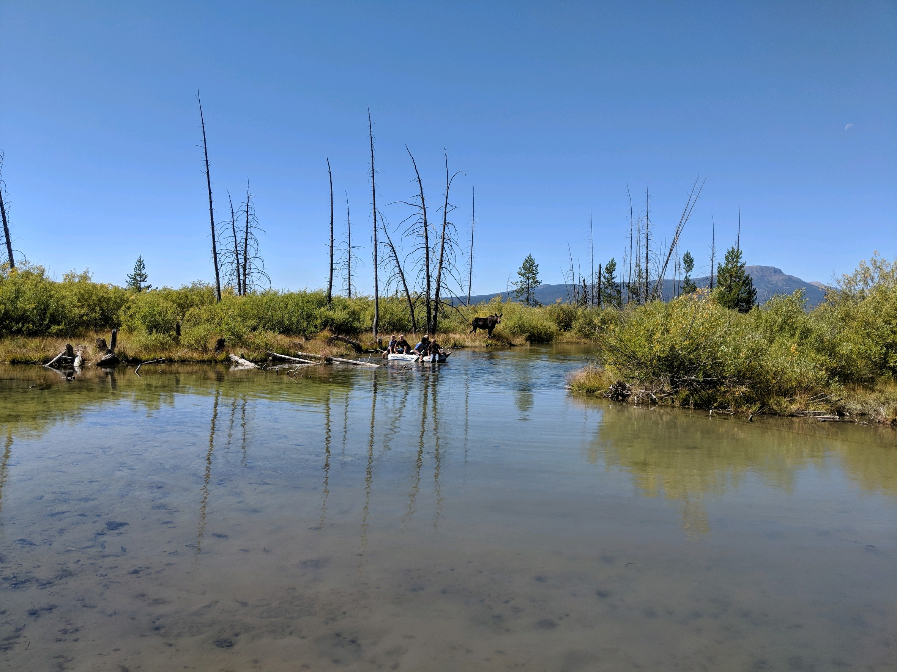

Overview
Learning how to hunt and looking at hunting maps
The pupose of this sight is to teach people how to hunt and use maps to find animals. We also want to explain where and how anyone can get big game tags. There are requirements for how to attain tags.
Everyone
For starters, be sure you have hunting license. It is the number one rule for big game outdoors.
Branding
Website Logo
Style Guide
Color Palette
| Primary | Secondary | Accent 1 | Accent 2 |
|---|---|---|---|
Typography
Heading Font: Connor Wood
Paragraph Font: [Lato, Helvetica, sans-serif]
Normal paragraph example
Big Game Outdoors is all about finding yourself in the outdoors with wildlife. Experience the joy of hiking, spotting wildlife, and catching your big game. Learn how to use maps on On-X Hunt app. We will teach you how to use their maps. You will learn features, geographics, BLM properties, etc. Hunting is amazing, but we ask for all hunter, travelers, etc. to be mindful of the seasons because there are regulations that limit what you can hunt.
Navigation
Information about big game
Content
Home page
These are the kinds of animals that you can hunt. There are rules the kind of animals that you can hunt. It varies on the season and the population. The first thing hunters must do is to get a hunter's license. They can do that by taking hunter's ed. It is cheaper to take it throught their home state because they require a driver's license ID to ensure their residency. To hunt in other states, you must have a hunter's license to have ensure legal rights under the state's big game rules. After having a hunter's license, the next thing you must do is draw a tag. It is always important to read regulation rules by season because the regulations may show that the season shows as either bow-hunting or rifle-action. Residents hunting in their home state can draw tags for a cheaper price. It is more expensive drawing tags outside of the state. After drawing a tag, you fill out a form and state how long the hunting trip will last, so the wildlife rangers are aware, if you encounter them. There is a heavy fine if you get caught without a license and a tag. Please be mindful of the rules and regulations as seen in the websites below.
Big Game

 


 

[Page 2]
The images below show an example of what is private because there will be sign that says, “no trespassing.” There is a fine if you trespass into someone else’s property. This is where onXhunt maps come into play. The app has features that will help the user to see if the properties are BLM or private. It will also give land elevation details pertaining the difficulties of the land-layout. The best thing on top of knowing the layout of the land is knowing how much wildlife has been spotted in those areas. Some hunting map apps will show the color-scheme, representing how much wildlife there is. If the rating shows as green, it means that there has been a lot of wildlife seen in those areas. Orange to red will show that there has not been enough wildlife in the surrounding areas. It is always important to pay attention to the types of land that you have legal access to. The only way to have access to private property is to talk to the owner for permission to be on their property. Give this app a shot. It is really helpful whenever it comes to figuring out where to go.
Creek
 [Page 3]
The best thing about hunting is being able to pick out your hunting gear and weapon. Keep in mind that it is always important to pay attention to the season because it may either be bow-hunting or rifle. To buy hunting gear, you can go to any local store that sells equipment. Some people like to go to places, such as Cal-Ranch and Cabela’s because of the high-quality gear they sell in stock. To buy a rifle, workers will ask for ID to ensure US residency. Some stores will also require both US ID, and a hunter’s license. The reason why they do that is to ensure that the individual knows gun safety. Uniform is number one because it keeps you hidden from wildlife. A smart hunter would cloak himself. The hard part is having to wear a highly visible vest, shirt, and a hat. This is to ensure that there are other hunters around, so no one gets killed. To learn about gun and bow safety, go to Hunter’s ed course for your home state to take the course and that is how you will get a license if you pass. There will be an exam to take after the course.
Forest


Home
.png) Visit fore more information tags
Visit fore more information tags
Page 2
information about hunting tags
.png)
[Page 3]
.png)